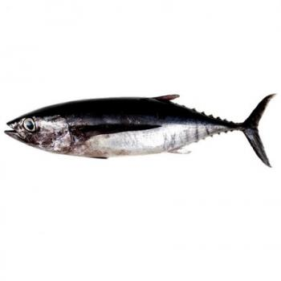

-
Peces De Agua Salada
Pez Anchoa 
Nombre científico:
Engraulis encrasicolus.
Características:
Cuerpo estilizado y comprimido, carece de escamas en el vientre. El color del dorso es verde azulado y el vientre plateado. Longitud máxima 20 cm, aunque raramente supera los 16 cm.
Pez Atún Nombre científico:
Thunnus thynnus
Características:
El atún rojo también es conocido como atún de aleta azul (Bluefin tuna) o cimarrón. Es un pez óseo, de la familia de los escómbridos. Es un pescado azul, túnido, siendo el atún de mayor tamaño. Está ampliamente distribuido por todo el Atlántico, el Mar Mediterráneo y en el Mar Negro.
Pez Bacalao Nombre científico:
Gadus morhua
Características:
>El bacalao es pescado blanco y de agua salada. Es el miembro de la familia Gadidae más ampliamente distribuido. Existen una gran cantidad de variedades y especies de este producto.
Pez Bonito Nombre científico:
Thunnus alalunga
Características:
También llamado bonito, albacora o atún blanco. Es un pescado azul y de agua salada. Es de aguas templadas y tropicales, entre 15 y 16 grados. Viven a media profundidad, nunca a profundidades mayores de 50 m.
Pez Gallo Nombre científico:
Lepidorhombus whiffiagonis
Características:
El gallo es un pez plano, comprimido y alargado, su talla es de 15 cm, Posee un color amarillo claro en el dorso, y rosado en la zona ventral, Mide de 20 a 50 cm, pudiendo alcanzar los 60 cm. Los ejemplares grandes pesan hasta 1 kilo, mientras que los de ración, tan sólo unos 250 gramos.
Pez Dentón Común Nombre científico:
Dentex dentex
Características:
Es una especie de pez de la familia de los es páridos, común en el Mar Mediterráneo. Su nombre viene de los grandes dientes que posee. Sinónimos poco usados son rozón o sama. Los adultos pueden alcanzar hasta 100 cm de longitud, con un peso máximo de unos 14 kg. Tiene un color gris verdoso en los jóvenes y gris rojizo en adultos, con manchitas azuladas brillantes y a veces un bandeado oscuro a transversal. Posee una larga y única aleta dorsal con radios espinosos que puede plegar en un surco escondiéndola. Para capturar sus presas tiene cuatro fuertes colmillos en una dentadura sin molares -aunque no resulta peligroso para los humanos
Pez Breca Nombre científico:
Pagellus erythrinus
Características:
Es un pescado blanco y de agua salada. Su cuerpo tiene aspecto fusiforme, delgado y ovalado. Se diferencia claramente del besugo ya que es de un rosa más intenso.Normalmente se encuentra entre 20 y 100 m de profundidad, aunque puede estar a más metros en el Atlántico y Mediterráneo. Habita en fondos rocosos, de grava, arena y fango, en ocasiones penetra hasta los puertos, desplazándose en pequeños bancos.
Pez Herrera Nombre científico:
Lithognathus mormyrus
Características:
Conocido además como Mabra, Mabre, o Marbre, es una especie de pez, oriundo del Atlántico y del Mediterráneo, localizado fundamentalmente en fondos limosos, arenas y fangos, generalmente en áreas de radas y puertos. Es un pez de costumbres nocturnas, y muy curioso por ser hermafroditas proteándricos (machos en su nacimiento y hembras al alcanzar una cierta talla).
Pez Lubina Nombre científico:
Dicentrarchus labrax
Características:
También conocido como róbalo. Es un pescado blanco o semigraso según la época del año, y de agua salada. Pertenece a la familia Percichthydae. Habita en las costas rocosas de los arenales, las desembocaduras de los ríos, en puertos, dársenas, pantalanes y escolleras. Se acerca a la costa en los meses de calor. Vive en profundidades de 10 a 15 metros.
Pez Besugo Nombre científico:
Pagellus bogaraveo
Características:
Es una especie pesquera que se encuentra en los mares mexicanos y se captura en nueve estados.Es un pescado blanco, semigraso (dependiendo la época de captura), generalmente de agua salada y de gran importancia para el consumo humano por su aporte de proteínas, vitaminas y minerales.
Pez Chopa Nombre científico:
Spondyliosoma Cantharus
Características:
Presenta dorso de color azulado y los flancos son de color amarillento. Está emparentado con los Sargos, pero no llega a presentar bandas transversales y sus dientes no son planos si no puntiagudos. El macho posee una frente algo cóncava y el dorso muy abombado en cambio las hembras y los ejemplares jóvenes tienen la frente un poco convexa y el hocico puntiagudo. Antes, los machos grandes eran considerados como otra especie distinta a la de las hembras y los ejemplares jóvenes.
Pez Boga Nombre científico:
Leporinus obtusidens
Características:
Cuerpo comprimido y alto, parecido al Sábalo; pero más esbelto. Cabeza cónica y alargada. Boca breve, anterior, pequeña con 6 dientes arriba y debajo.
Pez Caballa Nombre científico:
Scomber scombrus
Características:
Se trata de un pescado azul de cuerpo alargado y fino, hidrodinámico y fusiforme con el hocico muy puntiagudo, grandes ojos, boca ancha y mandíbula fuerte con dientes pequeños cónicos. Está cubierta de pequeñas escamas y presenta un color blanco o perlado en el vientre que contrasta con las rayas oscuras verticales que la cubren en el lomo, con reflejos azulados.
Pez Esturión 
Nombre científico:
Acipenser sturio
Características:
También llamados Mariones o Sollos. Es un pescado semigraso y de agua salada. De este producto se obtiene el Caviar. El esturión pertenece al último representante de los teleósteos (peces con huesos en lugar de espinas). Se alimenta de invertebrados bentónicos y peces.
Pez Payaso Nombre científico:
Amphiprion Ocellaris
Características:
Pertenece al orden de los perciforme y existen alrededor de 30 variedades. Se distinguen fácilmente por su coloración naranja con franjas naranjas y bordes en color negro. Sin embargo, algunas variedades se distinguen por los colores rojos u otras variaciones que le dan un toque sofisticado. Pueden llegar a medir entre 10 y 18 cm de largo.
Pez Dardo Nombre científico:
Nemateleotris Exquisita
Características:
Son peces de agua salada muy resistentes a la variedad de la alimentación, aceptando comida congelada, en escama, plancton, larvas, entre otros. Son tímidos, pueden llegar a esconderse en circunstancias donde haya mucha luz o no se hayan relacionado con otros peces del acuario. Para sus cuidados en estanque es necesario colocar una generosa capa de sustrato blando, donde puedan escarbar.
Pez Cirujano Nombre científico:
Paracanthurus Hepatus
Características:
Es de color azul índigo en el que sobresalen dos franjas negras, una en la aleta caudal que pasa por el ojo y la otra en la aleta pectoral. La aleta caudal de estos ejemplares es amarilla, sin embargo, su matiz varía de acuerdo a la edad. El cuerpo del pez cirujano es aplanado, con un hocico puntiagudo, además, cuenta con diminutas escamas. Los ojos se encuentran en la parte superior de la cabeza y su boca, muy reducida, en la parte inferior.
Pez Mandibula Azul Nombre científico:
Opistognathus Rosenblatti
Características:
Posee una boca grande en una cabeza de forma cuadrada. La aleta caudal posee una coloración azulada con amarillo muy vistoso.Se alimenta de zooplancton, no obstante, puede llegar a consumir preparados comerciales.
Pez Navaja Nombre científico:
Aeoliscus Strigatus
Características:
El Aeoliscus strigatus, conocido por su nombre común como pez navaja, es una de las especies de peces más extrañas y sorprendentes. Este pez proviene del océano Indo-pacífico y mar rojo. Es nativo de Japón y se encuentra en la costa Este de África. Reside en aguas tropicales de 2 a 40 m de profundidad (Peces tropicales para acuario). Se encuentra en los arrecifes y zonas costeras. Su cuerpo es alargado de colores que varían según su hábitat. Es comprimido de manera lateral y tiene una capa transparente de placas imbricadas. Su zona ventral tiene forma de filo de un cuchillo o navaja, razón que le otorga su nombre. Mide alrededor de 10 cm hasta15cm
Pez Damiselas Nombre científico:
Chromis Vanderbuilt
Características:
Dentro de los peces de agua salada se encuentran, además, los Chromis vanderbuilt o según su nombre común, Damiselas. Son de cuidados relativamente sencillos y de temperamento pacifico, aunque, puede ser agresiva con animales tímidos. Son nativas de los arrecifes de Fiji, Nueva Caledonia y Tonga. Se pueden observar también en Taiwán y Hawái. Posee un color azul con amarillo con unas medidas aproximadas de 5 cm.
Pez Óscar Nombre científico:
Astronotus Ocellatus
Características:
Existen de gran variedad de colores, rojo, tigre, limón, albino, tigre rojo y tigre albino llamado también, cruz lution. Además, cambian de color, al proteger su territorio, si están estresados y durante las peleas. Su personalidad es su mejor atributo, en algunas ocasiones es llamado perro del agua. Por ello, es ideal para tenerlo en tu acuario, te divertirá si le prestas atención. Les encanta atraer la atención, haciendo payasadas, como nadar frenéticamente, escupir el agua o grava fuera del estanque, saltar y golpear la tapa del acuario.
Peces De Agua Dulce

Pez Tetra Neón 
Nombre científico:
Paracheirodon Innesi
Características:
El tetra pertenece a la familia Characidae y es uno de los peces más comunes que están presentes en acuarios de agua dulce. Nativo de Sudamérica, donde habita el río Amazonas, el tetra neón necesita temperaturas cálidas de agua, entre 20 y 26 ºC. Además, posee características fisiológicas que les permite adaptarse a aguas con altos niveles de hierro y otros metales, lo que para otras especies podría ser fatal. Esto, sumado a su colorido muy llamativo, su carácter tranquilo y que puede convivir en cardúmenes, lo vuelven un pez muy apreciado para la acuariofilia.
Pez Dorado Nombre científico:
Arassius Auratus
Características:
Esta especie se encuentra dentro de la familia Cyprinidae y es originaria del oriente de Asia. La carpa dorada es de pequeño tamaño comparada con otras especies de carpas, mide aproximadamente 25 cm y se adapta muy bien a diferentes condiciones ambientales. Sin embargo, su temperatura ideal en el agua ronda los 20 ºC. Además, es una especie muy longeva, ya que puede llegar a vivir cerca de 30 años.
Pez Cebra 
Nombre científico:
Danio Rerio
Características:
Nativo del sudeste asiático, el pez cebra pertenece a la familia Cyprinidae y es típico de ríos, lagos y lagunas. Su tamaño es muy pequeño, no supera los 5 cm, siendo las hembras algo más grandes que los machos y menos alargadas. Posee un diseño con franjas azules longitudinales a los lados de su cuerpo, de allí su nombre, y parece tener color plateado, pero es prácticamente transparente. Son muy dóciles, viven en pequeños grupos y pueden convivir muy bien con otras especies tranquilas.
Pez Ángel Nombre científico:
Pterophyllum scalare
Características:
El pez ángel es de la familia Cichlidae y es endémico de América del Sur. Es una especie de mediano tamaño, pudiendo alcanzar 15 cm de largo. Posee una forma corporal muy estilizada. Por ello, sumado a sus colores, es muy buscado por los amantes de la acuariofilia. De lado, su forma es similar a un triángulo, con las aletas dorsal y anal muy largas, y tienen una gran variedad de colores, pudiendo haber variedades grises o naranjas y con manchas oscuras.
Pez Guppy Nombre científico:
Poecilia Reticulata
Características:
También conocidos como lebistes, los peces guppy pertenecen a la familia Poeciliidae y son originarios de Sudamérica. Son peces pequeños, miden cerca de 5 cm las hembras y los machos aproximadamente 3 cm. Tienen gran dimorfismo sexual, es decir, que se diferencian machos y hembras, presentando los primeros diseños muy coloridos en la aleta caudal, siendo más grande y con colores azules, rojos, naranjas y muchas veces con manchas atigradas. Las hembras, por su parte, son de color verdoso y solo presentan coloración naranja o rojo en la aleta dorsal y caudal.
Corydora Pimienta Nombre científico:
Corydoras Paleatus
Características:
Son los encargados de mantener limpio el fondo del acuario debido a sus hábitos alimenticios, ya que, gracias a la forma de su cuerpo, aplanado ventralmente, están continuamente removiendo el sustrato del fondo en busca de alimento, que de otra forma se descomponen y podría causar problemas de salud al resto de habitantes del acuario. Esto también lo hacen gracias a los apéndices sensoriales táctiles que tienen debajo de su mandíbula a modo de barba, y con los que pueden explorar el fondo.
Molly Negro Nombre científico:
Poecilia Sphenops
Características:
El molly pertenece a la familia Poeciliidae y es nativo de América Central y parte de América del Sur. Posee dimorfismo sexual, ya que la hembra, además de ser más grande, pues mide alrededor de 10 cm, es de color naranja, a diferencia del macho que mide cerca de 6 cm, es más estilizado y es de color negro, de allí su nombre. Se trata de una especie pacífica que convive muy bien con otras de similar tamaño, como los guppys, coridora o pez ángel. Sin embargo, necesita mucho espacio en el acuario, ya que es un pez muy inquieto.
Pez Betta 
Nombre científico:
Betta Splendens
Características:
También conocido como luchador de Siam, el pez betta es una especie es de la familia Osphronemidae y originaria del sudeste de Asia. Sin duda, es de las especies de peces de agua dulce más llamativas y bonitas que los amantes de la acuariofilia eligen para sus acuarios. De tamaño mediano, su longitud es de alrededor de 6 cm y posee una gran variedad de colores y formas de sus aletas.
Pez Platy Nombre científico:
Xiphophorus Maculatus
Características:
El platy es un pez de agua dulce de la familia Poeciliidae, nativo de Centroamérica. Al igual que otros miembros de su familia, como es el caso de los mollys y los guppys, esta especie es muy fácil de cuidar, por lo que también es un excelente compañero para otros peces de tu acuario. Se trata de un pez de tamaño pequeño, unos 5 cm aproximadamente, siendo la hembra algo más grande. Su coloración varía bastante, existiendo individuos bicolor, naranjas o rojos, azules o negros y con franjas.
Pez Disco Nombre científico:
Symphysodon Aequifasciatus
Características:
De la familia Cichlidae, el pez disco es nativo de América del Sur. Aplanado lateralmente y en forma de disco, puede alcanzar cerca de 17 cm. Su coloración puede variar entre marrones, naranjas o amarillos a azules o tonos verdosos. Prefiere compartir el territorio con peces tranquilos como los mollys, el pez tetra o los platy, mientras que especies más inquietas como los guppys, peces angeles o los betta, podrían no llevarse bien con el pez disco, ya que pueden ocasionarles estrés y llevarlos a enfermarse.
Pez Gurami Nombre científico:
Trichogaster Leeri
Características:
El gurami pertenece a la familia Osphronemidae y es nativo de Asia. Su cuerpo aplanado lateralmente y alargado mide alrededor de 12 cm. Posee una coloración muy llamativa: su cuerpo es plateado con tonos marrones y está cubierto por pequeños lunares similares a perlas, lo cual le ha dado nombre a la especie, además de poseer una línea en forma de zigzag oscura que atraviesa lateralmente su cuerpo desde el hocico hasta la aleta caudal.
Pez Ramirezi Nombre científico:
Microgeophagus Ramirezi
Características:
De la familia Cichlidae, el ramirezi es originario de América del Sur, más concretamente de Colombia y Venezuela. Es pequeño, mide de 5 a 7 cm y en general es pacífico, pero se recomienda que, si convive con una hembra, estén solos, puesto que puede ser muy territorial y agresivo durante la época de cría. Sin embargo, si no están con una hembra, pueden convivir tranquilamente con otras especies similares.
Acara Azúl Nombre científico:
Andinoacara Pulcher
Características:
Pez comestible de la familia Cichlidae, por poseer escamas redondas con anillos de crecimiento. Cuerpo ovalado, frente ancha y costados aplastados, con una gran boca protráctil. El dorso es de color aceituna y los costados marrón amarillento o grisáceo. Andinoacara Pulcher presenta de cinco a ocho bandas transversales oscuras en el cuerpo; numerosas líneas verdeazuladas brillantes sobre la mejilla; parte media del cuerpo, dorsal y anal con manchas oscuras.
Negro Calvo Nombre científico:
Altolamprologus Calvus
Características:
Su cuerpo puede doblarse de tal forma que alcanza a meterse en pequeñas hendiduras para cazar crustáceos y peces mucho más pequeños. Esta característica sumada a la disposición de la boca, lo habilitan para explorar exitosamente el sustrato en procura de su alimento. También le ayuda sobremanera la posibilidad de girar sus ojos 90º, pues le permite escudriñar a sus presas en las grietas.
Pez Cacatúa Nombre científico:
Apistogramma Cacatuoides
Características:
El Apistogramma Cacatuoides es un cíclido procedente de Sudamérica, en la cuenca del río Amazonas (Guyana) y también en Perú. En Perú, concretamente, la especie se está probando para ser utilizada como biorregulador efectivo en el control de las enfermedades transmitidas por mosquitos y otros insectos. Es un cíclido enano que destaca por su fuerte carácter dentro de los peces de agua dulce, es territorial y muy agresivo con los de su misma especie.
Pez Tetra de Aleta Sangrante Nombre científico:
Aphyocharax Anisitsi
Características:
El tetra de aleta sangrante se reconoce fácilmente por sus aletas de colores. La aleta caudal, la aleta anal, aletas ventrales y la aleta dorsal son de un color rojo intenso que contrasta brillantemente contra el cuerpo plateado. Esta especie de pescado no está sin embargo sólo apreciado por su belleza, sino que es también un pez activo y robusto que se puede vivir por más de 10 años en cautiverio. Es una alternativa del más famoso tetra neón.
Pez Cíclido Mariposa Africana 
Nombre científico:
Anomalochromis Thomasi
Características:
Los machos pueden llegar alcanzar los 9 cm. de longitud total y las hembras los 7 cm, en estado salvaje. Es un pez de cuerpo alargado y comprimido lateralmente, la aleta dorsal y la anal son grandes ensanchándose hacia la zona posterior. Esta especie destaca por una larga espina dorsal coronado con un doble ribete azul y rojo y unas protuberantes aletas pectorales.
Pez Tetra Cavernícola Nombre científico:
Astyanax Jordani
Características:
El Astyanax Jordani habita en Norteamérica y Centroamérica. Originalmente procede de las cuencas del río Nueces, curso inferior del río Grande y del río Pecos, pero extendida posteriormente a todo el Estado de Texas y a gran parte de Centroamérica hasta Guatemala. Norte y centro de México, así como Guatemala. Especie introducida artificialmente en Filipinas. Es un pez ciego, con los ojos tapados por la piel y carente de pigmentación. Perteneciente a la orden de Characiformes, alargado y comprimido lateralmente y sin pigmentación.
Pez Killi Nombre científico:
Aphyosemion Gardneri
Características:
Alargados con forma de cilindro. Aphyosemion Gardneri es un pez muy fácil de cuidar y criar ideal para principiantes ya que no tiene muchos cuidados especiales.
Apistogramma Pandurini Nombre científico:
Apistogramma Panduro
Características:
El Apistogramma Pandurini es un cíclido que habita en en Sudamérica, en los tramos del río Amazonas y afluentes, en el río Ucayali, río Carahuayte, río Copal y en la parte oriental de los andes peruanos. Pertenecientes a la orden de los perciformes, son peces tímidos y un poco territoriales.